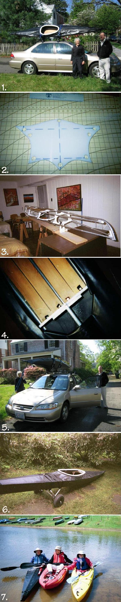

| Sea Tour 13 by Kathy Smith | Menu Last Page Next Page |
|  |
Some Thoughts On Making And Paddling my Sea Tour 13
By Kathy Smith ( Photo 1)
Many years ago I used to sew my own clothes. When I measured and cut out the ribs
and fabric for this kayak, I used some of my old sewing tools [Photo 2]. I mention
this for the benefit of other woman (and men) who think they have to be really mechanical
to build a boat. Basically, if one can measure, cut, drill holes, and attach things to each other,
she or he can probably build a skin on frame kayak like the Sea Tour.
Nevertheless, I was very nervous at the beginning and for much of the building. I e-mailed
tons of questions to Tom Yost, who was very patient and helped me through the process.
At some point, around the time I was building the bow and stern, I hit a plateau and realized
that it was not so exact a process that everything had to come out exactly right. The boat is
called a Sea Tour 13 and is designed to be 13 feet long. My boat is nearly 14 feet long. I think,
because I used a hand drill rather than a drill press, that I probably drilled some holes in the
HDPE that were at a slight angle rather than straight up and down. This may have influenced
where the chines and gunwales attached at the bow and stern, and therefore the length of the
boat..
Also I did not use a strong back [Photo 3]. Instead I used two saw horses, two boards attached
with a metal brace and an old desk. My biggest worry was that my boat would not track straight.
In the end, it was fine; it tracks beautifully.
There are photos of boats on Tom Yost’s web site that are beautifully made; real works of art.
Mine is not. Up close, it's easy to spot a lot of imperfections. If I made another one, I’d still
probably skip the strong back and take my chances. I’d also zip through the process a lot
quicker and not sweat the measuring as much as I did on the first boat. Maybe I would regret the
haste, but I suspect not. A level is a really useful tool in making this boat. I believe the level enabled
me to get away with skipping the strong back.
SOME GOOD AND BAD ASPECTS OF THIS BOAT
The good news is that the boat is quite fast. The bad news is that, when I am paddling with
people who are slower paddlers or in slower boats for whatever reason, I get tired of stopping
and waiting for them to catch up. They in turn get tired more quickly because they don’t get the
chance to stop and rest as often as I do. That limits me to using this boat when I am by myself
or with fairly fast paddlers.
The boat is great as long as I am on a river that does not have a lot of rocks close to the surface.
This past summer I was paddling hard on such a river and hit a rock at a pretty good speed. I
noticed that my seat was getting wetter. When I pulled over, I found a one-inch tear on a part
of the bottom that had not been protected by a rub strip. If I had been alone or with a few friends, I
could have fixed it in a hurry and continued on with no problem. However, in this case I was on
an organized Sojourn with a large number of people. While we were able to do a quick temporary
patch with duct tape that enabled me to reach our destination for that day, the trip leader decreed
that I could not use the boat for the rest of the trip. I could not convince him otherwise. If he had
been willing, I could have glued a patch on that evening and continued on until I hit the next rock
that put a hole in the fabric, if that were to happen again.
If by myself or with a few friends, I probably would not have been traveling that fast and would have
been able to choose a route that avoided most of the rocks. But I mention this to show that the boat
should not be considered indestructible. Molded plastic boats are pretty indestructible; skin on frames
are not.
One good thing about this yak is that because I made it, I can fix anything that will go wrong, something
I probably couldn’t do with a commercial boat. The rib at the back of the coming cracked, possibly when
I was getting in or out of it. It was already weak because of the hole I had drilled through it for attaching
the coming. I was able to do an easy brace with a small scrap of HDPE, a few small screws, and some
epoxy glue. I suspect that sucker’s good for the life of the boat. [Photo4]
THE COST
I needed to buy some new tools such as a faster drill, respirator, heat gun, aluminum tube bender,
level, chalk line and chalk, and new vise, to name a few. Many of these things will get use in other
home projects. I also needed to buy a carrying rack for my car. My previous boats were inflatables
and didn’t require a rack. [Photo 5]
The cost of the actual kayak materials was about $425 to 475.
The Thule roof rack system with a Hull-a-port was $600.
Other assorted tools and materials came to $600
These cost totaled up to more than $1600.
The experience was priceless. In the process of making this boat, I learned to use these tools and
developed more confidence in my building and repair abilities. I hope to put some of that know-how
to use on other projects and repairs around the house. The tools will probably pay for themselves
because I can do the work rather than hire a professional. I already replaced broken handles on two
golf carts that I would otherwise have had to throw out. Nevertheless, I could have bought a pretty
good boat for the $1000 I paid for materials and tools. It would not have been a light boat
that I could put on and take off the car by myself. The Sea Tour 14 weighs about 32 pounds and I can
handle it by myself. My husband accompanied me on the first launch, but I put the boat on the car as he
stood by. I wanted to prove to myself that I could do it. [Photo6]
To sum it up, I’m glad I made this boat. I look forward to taking it on Sojourns on tidal rivers
and am enjoying it with fast paddling friends and on my own. I may yet buy a second-hand
hard-hulled boat for future Sojourns on rocky rivers, but the enthusiasm in selecting that boat will be
nothing compared to the enthusiasm I put into building the Sea Tour 14. It was a really good experience.
[Photo7] Kathy Smith |